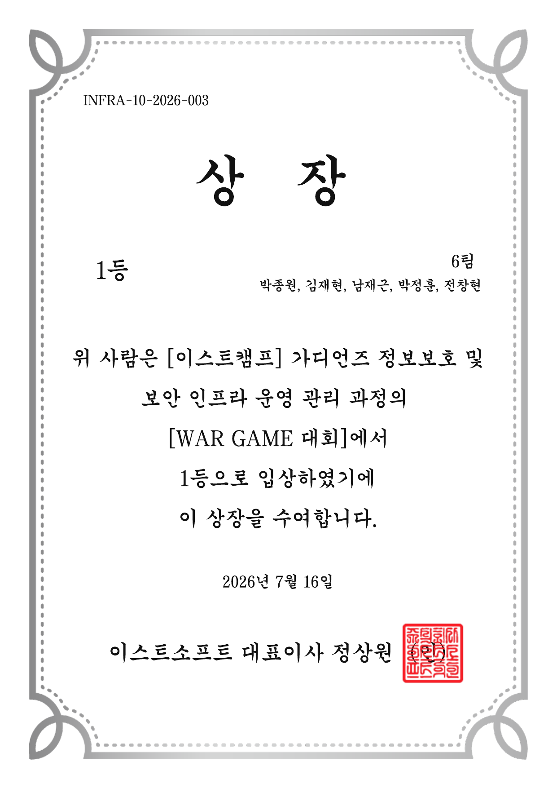
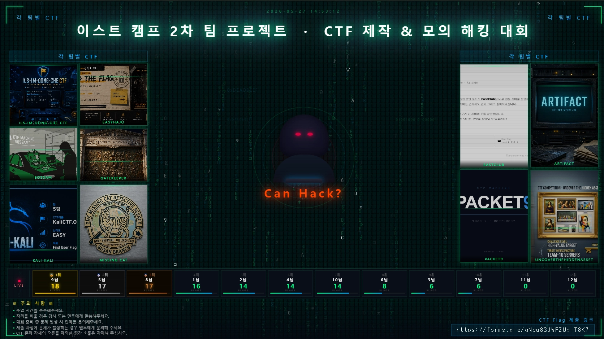
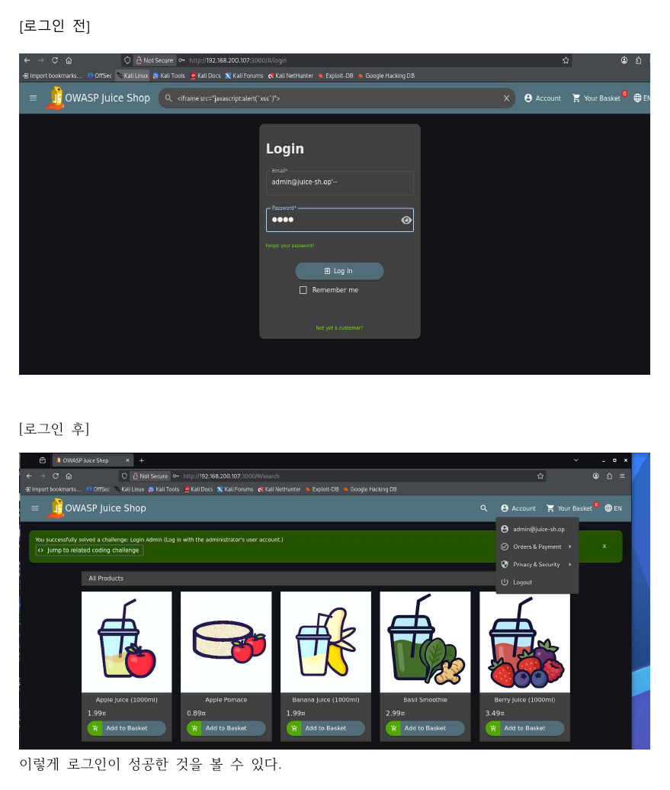
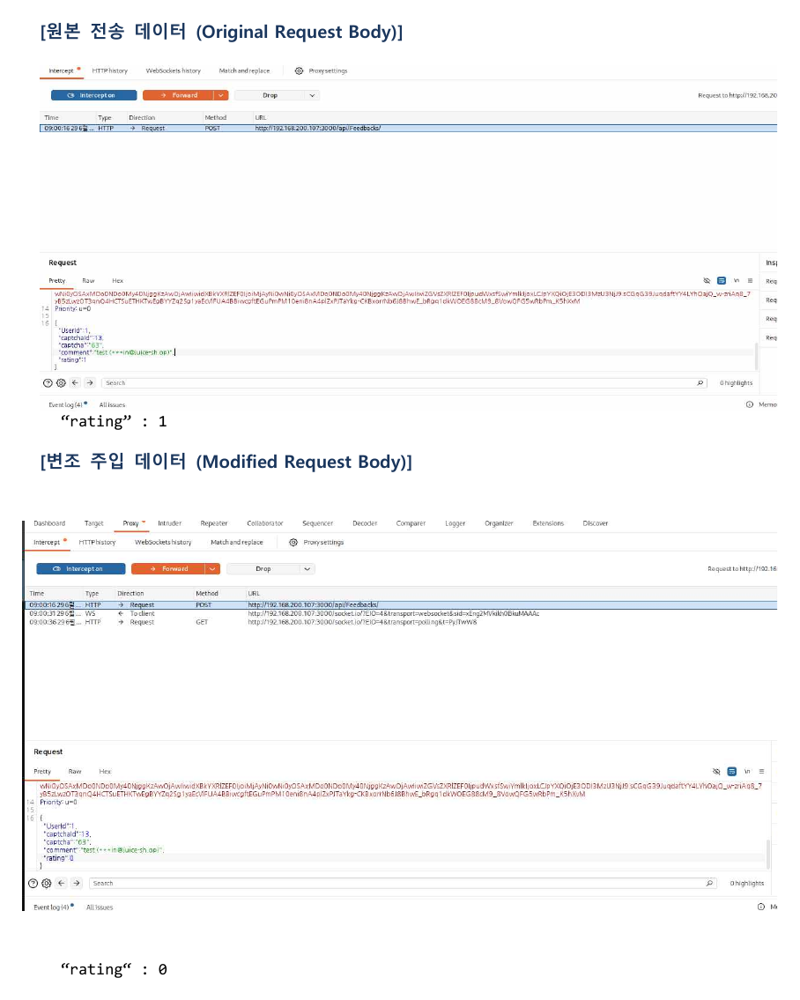
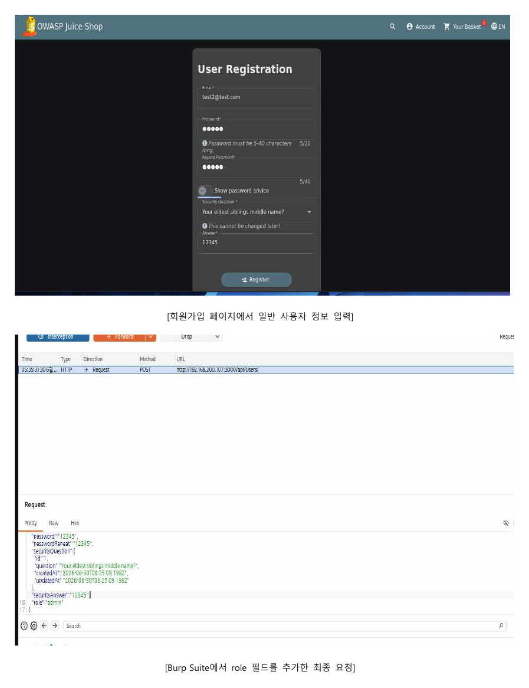
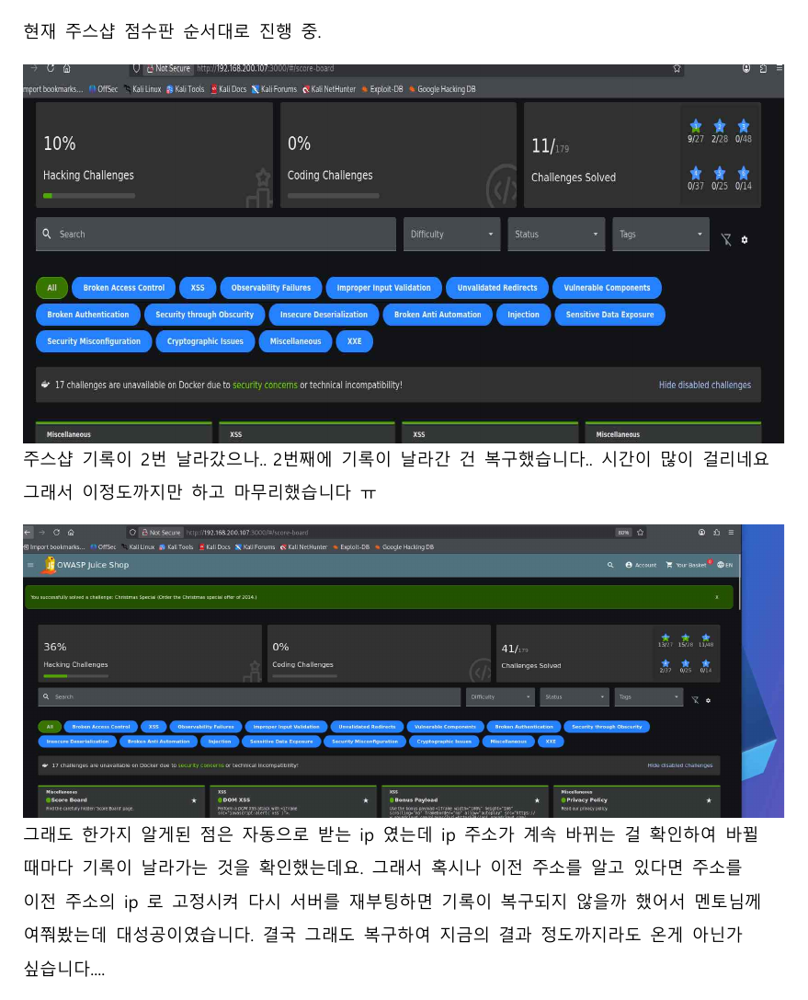
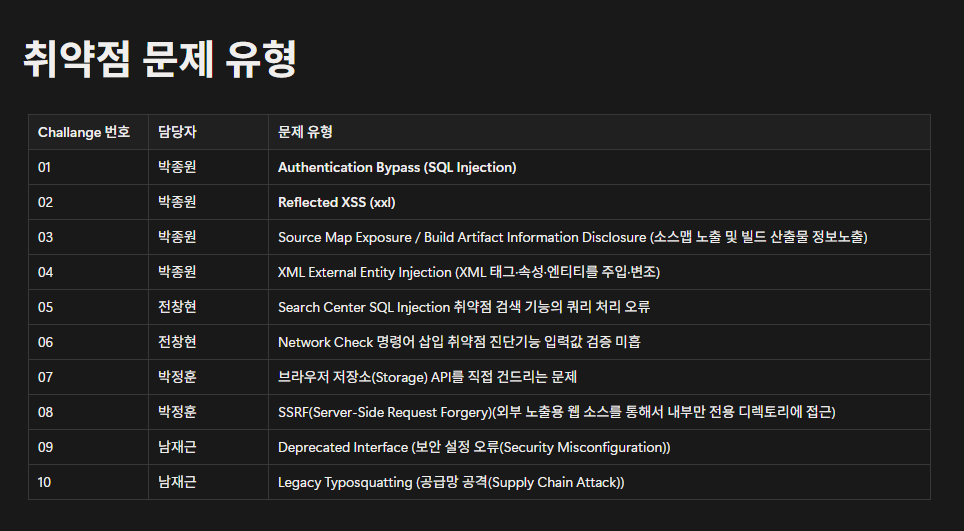
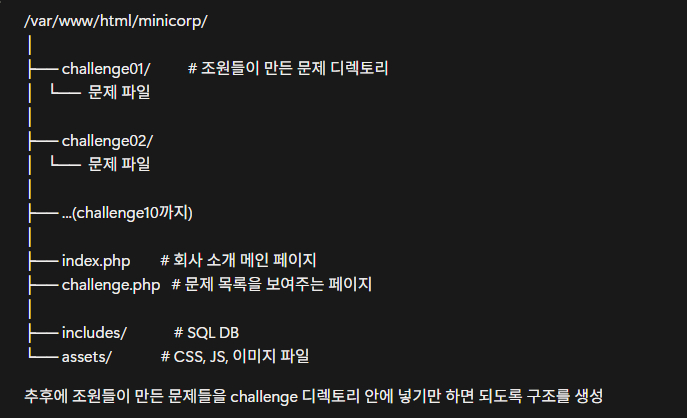
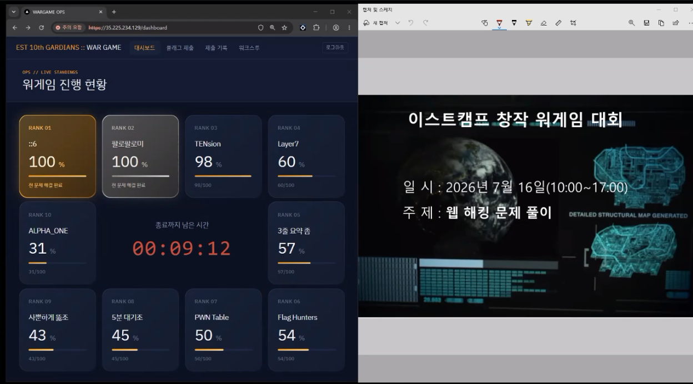

CTF · WEB SECURITY · WAR GAME
보안 실습
정규 프로젝트와는 별도로 진행한 CTF, Juice Shop 실습, 창작 워게임을 모았습니다.
수상 성과
창작 워게임 대회 1등
6팀 ::6으로 참가해 모든 문제를 해결했고, 실시간 순위 100%로 1등을 기록했습니다. 저는 팀에서 Challenge 09와 10 제작을 맡았습니다.

2026.05.27 · 2팀
팀별 CTF 제작 및 모의해킹 대회
팀별로 문제를 만든 뒤 서로의 CTF를 풀어보는 방식이었습니다. 저희 2팀은 EasyHajo 문제를 준비했고, 대회에서는 14개 플래그를 찾아 5등으로 마무리했습니다.

EasyHajo 문제 구성
서비스와 포트를 확인한 뒤 숨겨진 경로와 백업 파일을 찾고, 쿠키 우회와 파일 업로드를 거쳐 리버스 셸을 확보하도록 구성했습니다. 이후 명령어 삽입과 계정 정보 확인, 권한 상승으로 root 플래그까지 이어지는 흐름입니다.
대회 후 정리
문제를 푸는 데서 끝내지 않고 출제 의도와 풀이 순서를 따로 문서화했습니다. 어떤 단서를 보고 다음 단계로 넘어가는지 다시 정리하면서 출제자와 풀이자 양쪽 관점으로 돌아볼 수 있었습니다.
2026.06.26 - 07.05
OWASP Juice Shop 취약점 실습
Juice Shop에 직접 접속해 취약점을 찾고 Burp Suite로 요청값을 확인·수정했습니다. 성공 화면만 모은 것이 아니라 공격이 가능한 이유와 막는 방법까지 보고서에 정리했습니다.




실습하면서 남은 경험
기록이 두 번 사라졌을 때 처음에는 다시 풀어야 한다고 생각했습니다. 두 번째에는 멘토님께 상황을 여쭤보고, 서버가 사용하던 이전 DHCP 주소로 IP를 고정한 뒤 재부팅해 기록을 되살렸습니다. 취약점 풀이뿐 아니라 실습 환경의 주소와 데이터가 어떻게 연결되는지도 직접 확인한 경험이었습니다.
2026.07.16 · 6팀
창작 워게임 문제 제작과 대회
한 팀원이 서버 통합을 맡았고, 나머지 팀원들은 Challenge 01부터 10까지 문제를 나누어 만들었습니다. 저는 Challenge 09와 10을 맡아 공통 구조에 맞춰 문제 파일을 준비했습니다.


Deprecated Interface
보안 설정 오류를 주제로, 더 이상 권장되지 않는 인터페이스가 남아 있을 때 생기는 문제를 풀이 흐름으로 구성했습니다.
Legacy Typosquatting
공급망 공격을 주제로, 정상 패키지와 비슷한 이름을 이용하는 Typosquatting 상황을 문제로 구성했습니다.

::6이 제가 속한 6팀이며, 전 문제를 해결해 100%로 1등을 기록했습니다.